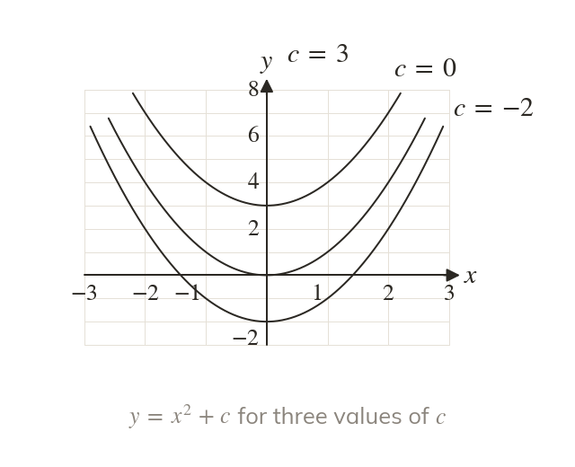
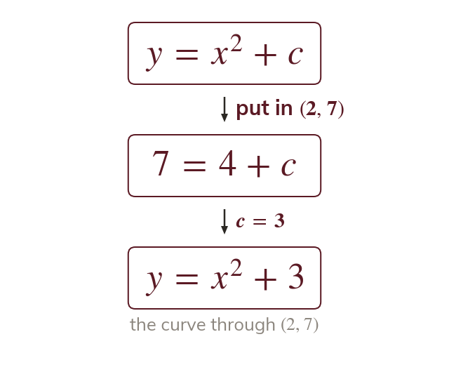
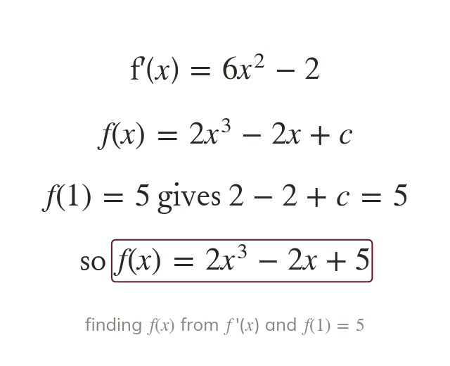
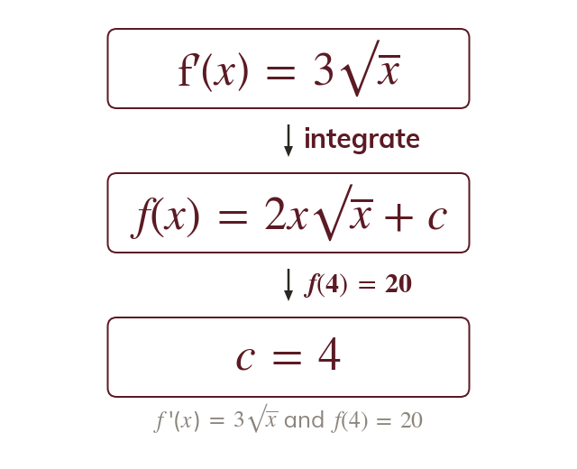
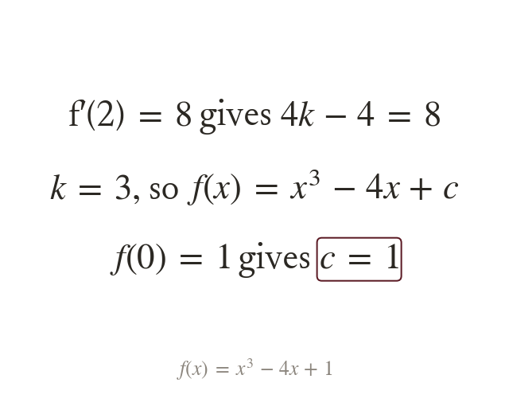
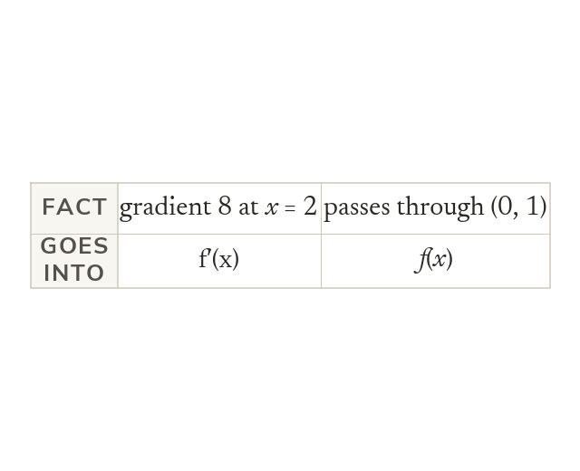

A family of curves
Integrating gives Each value of gives a different curve, each a vertical translation of
Integrating gives a whole family of curves, one for each value of One point picks out a single curve, which is how a model is found from its rate of change, and then turns an integral into a number.
Work down the page at your own pace. Write every answer in your book first, then click to check it.
Read each card, then follow the worked examples one step at a time.

Integrating gives Each value of gives a different curve, each a vertical translation of

If the curve passes through put and into Then so and the curve is

The same steps find from f′(x), with a value such as
It says the point is on
Pick an answer. If it's wrong, the feedback tells you which mistake it was.
Write the blanks in your book first, then tap each one to check.
Read each card, then follow the worked examples one step at a time.

A root or a bracket in f′(x) is written as powers of x first, as in
Then a given value fixes c, as before.

If f′(x) has an unknown a gradient fact finds from f′(x). A point on the curve then finds c from

A gradient fact, such as a gradient of at goes into f′(x). A point on the curve, such as goes into
Pick an answer. If it's wrong, the feedback tells you which mistake it was.
Write the blanks in your book first, then tap each one to check.
Finished? Next lesson: 12.P13.4 Definite Integrals.
For each skill, tap the one that is true for you today. Your Revise pages start with anything you mark Not yet.
Your ratings are saved on this device only.
Log in, then search for a code to practise that skill.